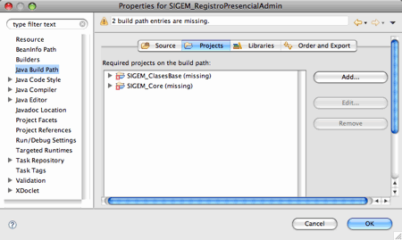

Acceso a la base de datos
Introducción
En esta sesión vamos a comenzar a estudiar el código fuente de algunos módulos de SIGEM. Por el momento hemos visto únicamente algunos aspectos determinados de la programación en lenguaje Java y una serie herramientas de desarrollo, por lo que todavía nos encontramos bastante limitados a la hora de estudiar el sistema. Nos centraremos en aquellos módulos que únicamente utilizan las tecnologías vistas hasta el momento, centrándonos especialmente en el acceso a bases de datos.
Preparación del entorno
Antes de comenzar a trabajar con el código fuente de SIGEM deberemos preparar el entorno de desarrollo en la máquina virtual, ya que en principio está únicamente preparada para probar la aplicación como vimos en la sesión inicial.
Eclipse
El primer paso que deberemos dar es instalar Eclipse en la máquina virtual, para así poder utilizar este entorno de desarrollo para el estudio, modificación, y pruebas de diferentes componentes de SIGEM.
Para instalar Eclipse simplemente descomprimiremos la versión de Linux de este entorno en nuestro directorio HOME (/home/sigem/). Podemos encontrar esta versión de Eclipse tanto en la web del curso como en el DVD de Software. Una vez lo hayamos descomprimido, veremos que tenemos un directorio eclipse dentro de nuestro directorio HOME. Para ejecutar Eclipse entraremos en este directorio y ejecutaremos el comando:
> ./eclipse &
Código fuente
A continuación, instalaremos el código fuente de SIGEM en la VM. Podemos encontrar el fichero con los fuentes (SIGEM_codigofuente.zip) en el DVD de Software entregado. Descomprimiremos este fichero en nuestro directorio HOME, creándose así un subdirectorio CodigoFuente conteniendo los fuentes de todos los módulos de SIGEM. Cada uno de estos módulos es un proyecto de Eclipse, que podrá ser importado posteriormente en este entorno de desarrollo.
Administrador de la BD
Para poder administrar la base de datos Postgres y consultar las bases de datos de las que disponemos en SIGEM es recomendable instalar la herramienta pgAdmin III. Esta herramienta puede ser descargada de la web del curso, o de su página oficial (http://www.pgadmin.org). Una vez descargado el RPM, lo instalaremos con:
> sudo rpm -i pgadmin3-1.8.4-1.i586.rpm
Con esto ya tendremos instalado pgAdmin III, y podremos ejecutarlo con:
> pgadmin3
Arquitectura general de SIGEM
El sistema SIGEM se compone de 4 grandes aplicaciones. Estas aplicaciones son:
- Registro
- Gestión de Expedientes
- Archivo
- Tramitación Electrónica
Para permitir la intercomunicación entre dichas aplicaciones se define una pasarela que permite a cada una de ellas acceder a los servicios de las demás. Dentro de esta pasarela, se permitirá tanto el acceso local a una de las aplicaciones, como el acceso remoto a través de servicios web.
La pasarela de comunicación se implementa mediante una factoría que nos independiza de la forma de acceso a los demás módulos (local o remota).
Estas aplicaciones y la pasarela de comunicación se componen a su vez de numerosos módulos que comenzaremos a analizar a continuación.
Módulos de SIGEM
Una vez tenemos instalado Eclipse y el código fuente de SIGEM, vamos a pasar a estudiar como se encuentran organizados los diferentes módulos de la aplicación. Cada subdirectorio dentro del directorio CodigoFuente corresponde a un módulo diferente. Vamos a ver los distintos tipos de módulos que podemos encontrar y las dependencias que existen entre ellos.
Tipos de módulos
Podemos distinguir diferentes tipos de módulos del sistema SIGEM:
| Tipo | Nomenclatura |
|---|---|
| Módulo Web | SIGEM_NombreModuloWeb |
| Módulo Servicio Web | SIGEM_NombreModuloWS |
| Módulo Cliente Servicio Web | SIGEM_NombreModuloWSClient |
| Módulo de librería | SIGEM_NombreModulo |
A continuación pasamos a describir cada uno de estos tipos:
- Módulos Web: Estos son los módulos "visibles" por el usuario de la aplicación. Son los que implementan la capa web de cada una de las diferentes funcionalidades de SIGEM. Esta capa de presentación dependerá de los módulos de librería en los que tenemos implementada la lógica de negocio y de datos.
- Módulos de Servicio Web: Estos módulos ofrecen determinadas funcionalidades de SIGEM en forma de Servicios Web, de forma que pueda accederse a ellos tanto de forma local como remota. Las distintas aplicaciones dentro de SIGEM se comunicarán entre ellas utilizando estos servicios.
- Módulos de Cliente de Servicios Web: Estos módulos encapsulan el acceso a los diferentes servicios del sistema SIGEM. Cuando un determinado subsistema de SIGEM necesita comunicarse con otro, podrá utilizar el cliente que nos dé acceso a los servicios del segundo. Estos módulos forman parte de la pasarela de comunicaciones entre las aplicaciones de SIGEM.
- Módulos de librería: Estos módulos nos proporcionan librerías de clases que pueden ser utilizadas por los módulos anteriores. Entre estas librerías podemos encontrar librerías de clases útiles, o la implementación de las capas de negocio y acceso a datos.
Dado que hasta el momento no hemos visto componentes web ni servicios web, nos limitaremos a estudiar alguno de los módulos de librería.
Dependencias entre módulos
Si importamos en Eclipse alguno de los módulos de SIGEM, lo más seguro es que obtengamos una serie de errores debidos a que dicho módulo dependa de otros para poder funcionar. Por ejemplo, un módulo web dependerá del módulo que se encargue del acceso a datos necesario para sus funcionalidades.
Es fácil descubrir las dependencias de un módulo mediante Eclipse. Lo que haremos será importar el módulo con el que estemos interesados en trabajar, y entrar en Properties > Java Build Path > Projects. Ahí veremos la lista de proyectos de los que depende. Si estos proyectos no se encuentran actualmente abiertos en Eclipse, se mostrarán con un signo de advertencia. Para que Eclipse pueda reconocer el proyecto correctamente deberemos abrir los proyectos necesarios, y repetir el proceso para cada uno de ellos, hasta que no haya más dependencias.

Vamos a seguir este procedimiento para trabajar con el módulo de administración del registro presencial. Este módulo se encuentra implementado en SIGEM_RegistroPresencialAdminWeb, que depende (entre otros) de la librería SIGEM_RegistroPresencialAdmin que es donde se encuentra la lógica de negocio y de datos. Dado que por el momento no hemos estudiado los contenidos necesarios para entender el módulo web, importaremos desde Eclipse directamente el módulo SIGEM_RegistroPresencialAdmin. Para importar este módulo seleccionaremos File > Import ... > General > Existing projects into workspace.
En la ventana de importar proyectos seleccionamos la opción Select root directory y en ella el directorio correspondiente al módulo SIGEM_RegistroPresencialAdmin (si se han seguido los pasos de este documento estará en el directorio /home/sigem/CodigoFuente/SIGEM_RegistroPresencialAdmin).
Una vez importado el proyecto, veremos que Eclipse nos lo marca con errores. Podemos consultar la causa de estos errores en la pestaña Problems de Eclipse. Veremos que estos problemas se deben al build path (faltan proyectos requeridos). Entramos en la pantalla del build path del proyecto para mirar qué dependencias nos faltan. Veremos las siguientes:

Deberemos por lo tanto importar los proyectos SIGEM_ClasesBase y SIGEM_Core.
Para que el proyecto SIGEM_ClasesBase compile correctamente también deberemos solucionar otros problemas del build path. La librería del JRE está mal enlazada, por lo que deberemos eliminarla y añadirla de nuevo. Por otro lado, debemos añadir al build path del proyecto la librería commons, que está incluida en el directorio lib pero no está añadida al build path, y es necesaria para que compile.
Clases de SIGEM
Los proyectos SIGEM_ClasesBase y SIGEM_Core proporcionan una librería de clases común que es utilizada en todos los módulos de SIGEM.
Núcleo de SIGEM
Todo el código del proyecto SIGEM_Core está contenido en subpaquetes de ieci.tecdoc.sgm.core. Encontramos los siguientes subpaquetes:
- base64: Contiene sólo una clase para codificar y descodificar datos en este formato.
- config: Gestiona el acceso a ficheros de configuración de la aplicación, en los que por ejemplo se especifican las fuentes de datos que se utilizarán (fichero SIGEM_spring.xml). Estos ficheros pertenecen al framework Spring, así como las clases que se utilizan para leer de ellos, por lo que por el momento no vamos a estudiar esta parte del código.
- db: Contiene una serie de clases para gestionar las fuentes de datos de la aplicación. Estas fuentes de datos se utilizarán cuando tengamos la aplicación en un servidor web, por lo que de momento tampoco vamos a trabajar con estas clases. En este paquete tambien podemos encontrar una clase con métodos útiles encargados de formatear una fecha en el formato utilizado por PostgresSQL.
- exception: Contiene la clase base para todas las excepciones propias de SIGEM (SigemException).
- services: Contiene multitud de subpaquetes. En ellos podemos encontrar numerosos Transfer Objects utilizados en SIGEM (realmente sería más correcto hablar de ellos como beans, ya que no cumplen la condición de ser serializables, necesaria para considerarse transfer objects). También podemos encontrar interfaces para los distintos servicios de SIGEM, excepciones propias de esta aplicación (todas ellas derivan de SigemException), y ficheros de configuración (properties). En el paquete principal se encuentra la clase LocalizadorServicios que es la factoría para obtener los distintos tipos de servicios disponibles en el sistema. Con ella podremos obtener la interfaz para acceder de forma local o remota a los diferentes servicios de SIGEM. Esta factoría nos devuelve la interfaz del servicio solicitado, cuya implementación podría ser el mismo servicio (acceso local) o el cliente para el servicio web correspondiente (acceso remoto).
- ws: Tenemos una clase de utilidad para obtener información de los mensajes utilizados en los servicios web de SIGEM. No analizaremos esta parte hasta haber visto el módulo de servicios web.
Clases básicas
Por otro lado, en el proyecto SIGEM_ClasesBase tenemos una serie de librerías de clases genéricas que se utilizarán como apoyo en la aplicación. Todas estas clases están dentro de subpaquetes de ieci.tecdoc.sgm.base, y por ejemplo podemos encontrar en db una serie de clases que encapsulan el acceso a una base de datos mediante JDBC. También encontramos clases para acceso a ficheros, conexiones FTP, tipos de colecciones de datos propias, etc. La diferencia fundamental entre SIGEM_Core y SIGEM_ClasesBase es que el primero de ellos contiene librerías de clases del dominio concreto de la aplicación, mientras que en el segundo tenemos librerías genéricas.
Módulo de librería: administración del registro presencial
Una vez vistas las librerías de clases comunes de SIGEM, vamos a pasar a estudiar un módulo de librería que da soporte a un grupo de funcionalidades concretas del sistema. Nos centraremos en el módulo que se encarga de la administración del registro presencial (SIGEM_RegistroPresencialAdmin). Las clases de este módulo están contenidas en el paquete ieci.tecdoc.sgm.rpadmin y subpaquetes del mismo.
Entre las clases de este módulo destaca la clase ServicioRPAdminAdapter en el paquete principal. Esta clase implementa la interfaz definida para este servicio en el módulo core: ServicioRPAdmin, contenida en el paquete ieci.tecdoc.sgm.core.services.rpadmin, en el que encontramos también transfer objects, excepciones, y ficheros de configuración utilizados en este módulo.
Esta clase ServicioRPAdminAdapter implementa el patrón fachada (facade). Este patrón consiste en proporcionar una interfaz única (fachada) para acceder a las funcionalidades de un determinado módulo, aislándonos así de la complejidad subyacente de dicho módulo. Podemos observar que este módulo esta compuesto por un gran número de clases, y puede resultar altamente complejo para quien quiera acceder a los servicios proporcionados por él aprender a utilizar esta librería de clases. Sin embargo, teniendo una interfaz a través de la cual acceder a estos servicios será mucho más intuitivo utilizarlos.
Por lo tanto, partiremos de dicha fachada para estudiar lo que nos ofrece este módulo. Si nos fijamos en el código fuente podemos ver que en este módulo tenemos implementado el DAO para acceder a los datos para la administración del registro presencial. La fachada utiliza una serie de clases que se encuentran en el paquete manager para acceder a los datos (por ejemplo RPAdminUserManager para el acceso a los datos de los usuarios). Este conjunto de clases nos aporta las operaciones sobre datos necesarias para cada una de las funcionalidades que debe ofrecer este módulo. Estas clases a su vez utilizan las clases del paquete database que son las que realizan el acceso a la BD a un más bajo nivel. Las clases de este paquete se conectarán a la BD mediante la librería genérica que tenemos en el proyecto SIGEM_ClasesBase, que como ya comentamos está basada en JDBC.
Por otro lado, algunos de los métodos de las clases del paquete manager, en lugar de acceder directamente a la BD, utilizan servicios de otros módulos de SIGEM. Así ocurre por ejemplo en las operaciones sobre usuarios, que utilizan la clase LocalizadorServicios para obtener acceso a otros servicios (concretamente ServicioEstructuraOrganizativa). De forma similar, cuando otros módulos necesiten tener acceso local al servicio con el que estamos trabajando actualmente, utilizarán la clase LocalizadorServicios para acceder a ServicioRPAdmin. Obviamente, dado que actualmente estamos probando únicamente el módulo SIGEM_RegistroPresencialAdmin, no podremos utilizar ninguno de los métodos de este módulo que necesite tener acceso a otros módulos.
También en este módulo encontramos el paquete beans con los objetos Java que encapsulan los datos propios del módulo, y el paquete exception con la excepción RPAdminDAOException que es la excepción que lanzamos en caso de obtener algún error en los métodos del DAO. Hemos de hacer notar que en estos métodos se utilizan nested exceptions. Podemos ver que cuando ocurre un error, se captura la excepción causante y se lanza una nueva de tipo RPAdminDAOException.
Base de datos
Antes de poder empezar a probar este módulo, necesitaremos poner en marcha el servidor de base de datos, ya que las operaciones que encontramos en los módulos estudiados son básicamente para acceso a datos. Seguiremos los pasos vistos en la sesión anterior para ejecutar el servidor de Postgres en la máquina virtual.
Administración de la base de datos
Puede resultarnos útil contar con una herramienta visual de administración de Postgres, para así poder consultar la estructura y el contenido de las bases de datos con las que vamos a trabajar. Para ello utilizaremos la aplicación pgAdmin III, que puede obtenerse de la página de software del curso o de su web oficial (www.pgadmin.org). Para instalar el fichero RPM en openSuse utilizaremos el siguiente comando:
> sudo rpm -i pgadmin3-1.8.4-1.i586.rpm
Para realizar la instalación nos pedirá el password de root (recordamos que es sigem). Una vez instalada, podremos cargar la herramienta con:
> pgadmin3 &
Para poder utilizarla deberemos haber puesto en marcha el servidor de Postgres previamente. Si esto es así, dentro de la herramienta crearemos una nueva conexión indicando como servidor localhost, y utilizando como login y password postgres / postgres. Con esto podremos ver un listado de las bases de datos instaladas, y los elementos que contienen.
Volcado de la base de datos
También puede interesarnos hacer un volcado de la base de datos para posteriormente instalarla en otra máquina o en otro sistema gestor de bases de datos. Podemos hacer esto mediante la aplicación pgAdmin III instalada en el punto anterior. Para ello pulsaremos sobre la base de datos que queramos exportar con el botón derecho, y pulsaremos sobre la opción Resguardo....
Veremos que podemos exportar la base de datos en diferentes formatos. El primero de ellos (COMPRESS) es un formato propio que exporta la base de datos en un fichero binario. Este formato tiene la ventaja de ser más compacto, pero sólo podrá ser utilizado para restaurar la base de datos en Postgres. Los otros formatos exportarán la base de datos en un fichero de texto con las sentencias SQL necesarias para crearla, por lo que nos podrían servir para adaptar la base de datos a otro sistema gestor de bases de datos.
De forma alternativa, también podemos exportar la base de datos desde línea de comando de la siguiente forma:
pg_dump -U postgres -cif registro.sql registro_000
En este caso estamos exportando la base de datos registro_000, que es la utilizado por los módulos que estamos estudiando en esta sesión.
Una vez exportados los datos, con la herramienta pgAdmin III podríamos crearnos una nueva base de datos e importar en ella los ficheros exportados, en cualquiera de los formatos vistos anteriormente.
Acceso a la base de datos desde la aplicación
La aplicación SIGEM accede a la base de datos a través de fuentes de datos definidas en el servidor de aplicaciones. Actualmente todavía no estamos trabajando con el servidor, por lo que no podremos acceder de esta forma. Si cogemos alguno de los métodos de la fachada ServicioRPAdminAdapter (por ejemplo obtenerOficinas) y vamos siguiendo las llamadas que se van haciendo para acceder a la base de datos, veremos que la conexión (Connection) se obtiene a partir de una clase DBSessionManager (perteneciente al paquete ieci.tecdoc.sgm.rpadmin.manager).
Vamos a fijarnos en el código de esta clase DBSessionManager. En ella se obtiene la conexión a partir de una fuente de datos del servidor. Realmente el nombre de esta fuente de datos se busca en un fichero de configuración de Spring, y a este nombre se le añade el código de la entidad con la que estemos trabajando (el sistema permite tener una BD distinta para cada entidad). Para las pruebas que vamos a hacer accederemos a la base de datos de registro correspondiente a la entidad 000, que es la única que tenemos creada en el sistema. Los datos para la conexión a esta base de datos están definidos en un fichero de configuración del servidor Tomcat. Para poder acceder a ella ejecutando la aplicación de forma independiente, sin utilizar el servidor, deberemos modificar el código de DBSessionManager de forma que en lugar de buscar la fuente de datos, realice directamente la conexión mediante JDBC y nos devuelva el objeto Connection obtenido. Los datos que deberemos usar en la conexión son los siguientes:
| Parámetro | Valor | |
|---|---|---|
| Driver | org.postgresql.Driver | |
| URL | jdbc:postgresql://localhost/registro_000 | |
| Usuario | postgres | |
| Password | postgres | |
Será recomendable comentar la línea que obtiene la conexión a través de la fuente de datos, e introducir el código para conectar directamente. De esa forma posteriormente podremos recuperar el código original, cuando vayamos a utilizar la aplicación en un servidor web.
Pruebas y depuración
Vamos a pasar ya a probar el módulo de la aplicación. Para ello, lo primero que haremos será crear un programa principal (driver) con el que probar alguna de las funcionalidades de nuestro módulo. Para ello introduciremos en el método main el código para llamar a alguna de las operaciones de la fachada (ServicioRPAdminAdapter). Por ejemplo, podemos probar a obtener el listado de oficinas:
public class Prueba {
public static ServicioRPAdminAdapter oServicio =
new ServicioRPAdminAdapter();
public static Entidad entidad = new Entidad();
static {
entidad.setIdentificador("00001");
}
public static void testListarOficinas() {
try {
Oficinas oficinas = oServicio.obtenerOficinas(entidad);
System.out.println("Numero: " + oficinas.count());
Iterator iter = oficinas.getLista().iterator();
while(iter.hasNext()) {
Oficina oficina = (Oficina) iter.next();
System.out.println(oficina.getNombre());
}
} catch (RPAdminException e) {
e.printStackTrace();
}
}
public static void main(String[] args) {
testListarOficinas();
}
}
Pruebas con JUnit
Podemos ver que en el proyecto SIGEM_RegistroPresencialAdmin existe un segundo directorio de fuentes llamado test donde se encuentra un TestCase de JUnit. Este fichero se encarga de probar la fachada (ServicioRPAdminAdapter), por lo que el resultado de las pruebas dependerá del contenido de la base de datos. Esto complica las pruebas, ya que además de los parámetros de entrada de los métodos probados, el contenido de la base de datos también se considerará como entrada, y deberá ser conocido de antemano a la hora de diseñar las pruebas.
Para solucionar este problema muchas veces estas pruebas se realizan no utilizando el DAO real, sino un DAO falso (mock) que no se conecta a la base de datos real, sino que devuelve siempre una serie de datos predefinidos. Algo así se pretende con la clase ServicioRPAdminDummy, que implementa la misma interfaz de la fachada pero no accede de verdad a la base de datos. Este tipo de objetos deberían definirse en el directorio test, ya que no debería estar mezclado con el código real de la aplicación. También es recomendable que estos mocks se encuentren en las capas más bajas de la aplicación (las que acceden realmente a JDBC), para así al menos estar probando el resto de componentes de nuestra aplicación. Por lo tanto, el fichero mock definido en este proyecto no tiene mucha utilidad, únicamente nos servirá para comprobar que el TestCase está funcionando correctamente, pero no será útil para probar los componentes de nuestra aplicación. En esta aplicación sobretodo lo que nos interesa es probar que accede a los datos reales de forma correcta, por lo que utilizaremos la fachada real para las pruebas.
Sin embargo, el TestCase tampoco está adaptado al contenido que hay actualmente en la base de datos, y ni siquiera se hacen comprobaciones (asserts) de si el resultado ha sido correcto en muchos de los métodos de prueba. Por ello, será conveniente dejar guardado este TestCase con otro nombre, para tenerlo como referencia, pero crear nosotros uno nuevo más reducido desde cero, teniendo en cuenta el estado actual de la base de datos y haciendo los asserts correspondientes en cada caso. Para que las pruebas resulten útiles deberiamos guardar un backup de la base de datos que hemos definido como entrada a la hora de diseñar las pruebas, y permitir que este estado de la base de datos pueda ser restaurado de forma sencilla cada vez que queramos volver a ejecutar dichas pruebas (por ejemplo definiendo un script de ant que ejecute las sentencias SQL necesarias).
Podríamos definir un TestCase inicial que compruebe que se obtiene el número correcto de oficinas, como el siguiente:
public void testListarOficinasListado() {
try {
Oficinas oficinas = oServicio.obtenerOficinas(entidad);
assertEquals(oficinas.count(), 2);
} catch (RPAdminException e) {
fail();
}
}
Será conveniente también refactorizar el TestCase para moverlo al mismo paquete en el que se encuentra la clase probada, tal como se recomienda.
Gestión de logs
Podemos ver que en el código de la aplicación se utiliza Log4J para generar logs de la aplicación. Sin embargo, no vemos en los proyectos que estamos estudiando ningún fichero log4j.properties con la configuración de esta librería. Esto se debe a que este fichero se encuentra en los proyectos web, que son los que utilizan estas librerías. Cada uno de los módulos web generan sus logs en un directorio separado, todos ellos bajo el directorio /home/sigem/SIGEM/logs.
Si queremos poder ver los logs mientras probamos nuestro módulo de forma independiente, podríamos incluir en él un fichero log4j.properties que por ejemplo muestre los logs en la consola.
DefaultAppenderType=org.apache.log4j.ConsoleAppender
DefaultLayout=org.apache.log4j.PatternLayout
DefaultLayoutPattern=%d %-5p %-40c{3} - %m%n
log4j.rootLogger=INFO, A1
log4j.appender.A1=${DefaultAppenderType}
log4j.appender.A1.layout=${DefaultLayout}
log4j.appender.A1.layout.ConversionPattern=${DefaultLayoutPattern}
Acceso a otros módulos
Hemos visto antes que algunas operaciones de nuestro módulo no podían ser utilizadas por depender de otros módulos (por ejemplo la operación obtenerUsuarios que depende del módulo SIGEM_EstructuraOrganizativa). El acceso a este módulo se realiza mediante la pasarela de intercomunicación, implementada en la factoría LocalizadorServicios, que nos proporciona acceso a la interfaz local o remota para acceder a cada módulo.
Vamos a probar a acceder a la operación obtenerUsuarios desde nuestro programa principal de prueba:
public static void testListarUsuarios() {
try {
UsuariosRegistradores usuarios =
oServicio.obtenerUsuarios(entidad);
System.out.println("Usuarios: " + usuarios.count());
Iterator iterUsuarios = usuarios.getLista().iterator();
while(iterUsuarios.hasNext()) {
UsuarioRegistrador usuario =
(UsuarioRegistrador)iterUsuarios.next();
System.out.println(usuario.getNombre());
}
} catch (RPAdminException e) {
e.printStackTrace();
}
}
Si lo ejecutamos, veremos que nos da un error al intentar localizar la clase que implementa el acceso al módulo necesario. Comprobaremos así que efectivamente necesitamos el módulo de estructura organizativa.
Vamos a seguir los pasos necesarios para solucionar este problema y así poder probar esta operación. Para ello deberemos importar en Eclipse el módulo necesario (SIGEM_EstructuraOrganizativa) teniendo en cuenta que:
- Este módulo puede contener más dependencias, que deberían ser importadas para su correcto funcionamiento.
- Para que SIGEM_RegistroPresencialAdmin pueda acceder a las clases de SIGEM_EstructuraOrganizativa este segundo proyecto deberá figurar como dependencia del primero.
- Las clases del módulo SIGEM_EstructuraOrganizativa obtienen la conexión a la base de datos a través de su propio objeto DBSessionManager que por defecto obtiene la conexión a través de una fuente de datos del servidor. Deberemos modificarlo para que establezca la conexión directamente.
Ahora podríamos plantearnos añadir un mayor número de pruebas a nuestro TestCase de JUnit.